Bienvenue
Ce module vous apprendra à personnaliser l’aspect de vos graphiques. Vous apprendrez à :
Zoomer sur les zones d’intérêt du graphique
Ajouter des étiquettes (labels) et des annotations à vos graphiques
Changer l’apparence de votre graphique avec theme
Utiliser des échelles de couleur (scales) pour sélectionner des palettes de couleurs personnalisées
Modifier les étiquettes, le titre et la position des légendes
Le module est adapté du livre R for Data Science de Hadley Wickham et Garrett Grolemund, publié par O’Reilly Media, Inc. 2016, ISBN : 9781491910399. Vous pouvez acheter le livre sur shop.oreilly.com.
Le module utilise les packages {ggplot2}, {dplyr}, {scales}, {ggthemes} et {viridis}, qui ont été préchargés.
Zoom
Dans les modules précédents, vous avez appris à visualiser les données à l’aide de graphiques. Voyons maintenant comment personnaliser leur aspect. Pour ce faire, nous devons commencer par un graphique que nous pouvons personnaliser.
Révision - Créer un graphique
Dans le bloc ci-dessous, faites un graphique qui utilise des boîtes à moustaches pour afficher la relation entre les variables cut et price du jeu de données diamonds.
ggplot(diamonds) +
aes(x = cut, y = price) +
geom_boxplot()"Bon travail ! Utilisons cette trame comme point de départ pour en faire une trame plus élaborée qui affiche un message clair."Sauvegarde de graphiques
Puisque nous voulons réutiliser ce graphique plus tard, allons-y et sauvegardons-le.
p <- ggplot(diamonds) +
aes(x = cut, y = price) +
geom_boxplot()Maintenant, chaque fois que vous appellerez p, R va dessiner votre graphique. Essayez et vous verrez.
p"Bon travail ! Au fait, avez-vous pris un moment pour regarder ce que montre le graphique ? Faisons cela maintenant."Surprise ?
Notre graphique montre quelque chose de surprenant : lorsque vous regroupez les diamants par taille, les diamants les plus mal taillés ont le prix médian le plus élevé. C’est un peu difficile à voir dans le graphique, mais vous pouvez le vérifier par une manipulation des données.
diamonds %>%
group_by(cut) %>%
summarise(median = median(price))Zoom

La différence entre les prix médians est difficile à voir dans le graphique car chaque groupe contient des valeurs aberrantes éloignées (outliers).
Nous pouvons rendre ce phénomène plus facile à voir en zoomant sur les valeurs basses de \(y\), où se situent les médianes. Il y a deux façons de zoomer avec {ggplot2} : avec et sans rognage.
Rognage
Le rognage fait référence à la manière dont R doit traiter les données qui se trouvent en dehors de la région zoomée. Pour voir son effet, regardez ces graphiques. Chacun d’eux zoome sur la région où le prix est compris entre $0 et $7,500.
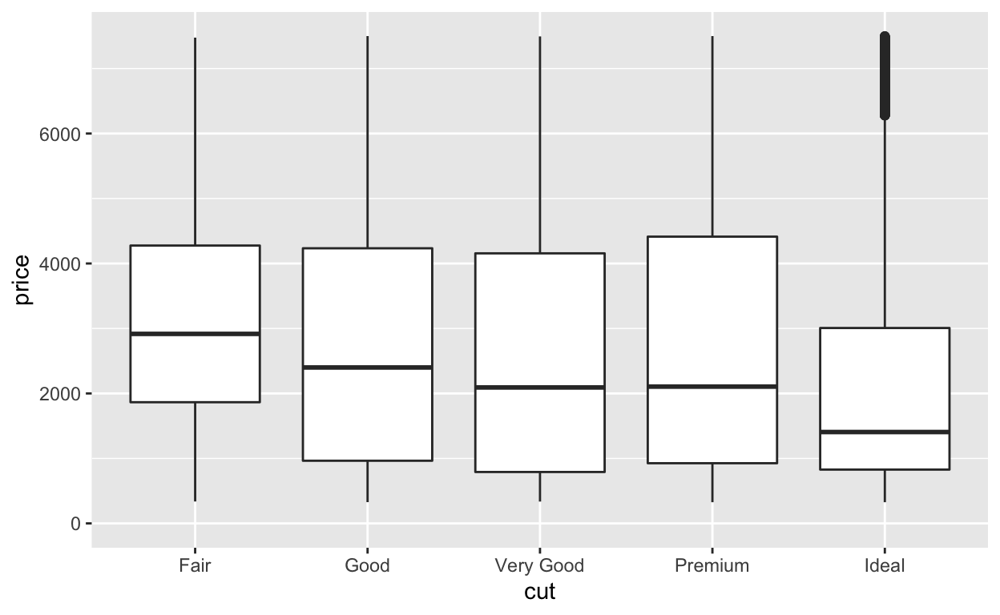
Le graphique de gauche fait un zoom avec rognage. Il supprime tous les points de données qui se trouvent en dehors de la région souhaitée, puis trace les points de données qui restent.
Le graphique de droite fait un zoom sans rognage. On peut considérer qu’il s’agit de dessiner tout le graphique puis de zoomer à la manière d’un emporte-pièce sur une certaine région.
xlim() et ylim()
Parmi les deux, le zoom par rognage est le plus facile à réaliser. Pour zoomer votre graphique sur l’axe \(x\), ajoutez la fonction xlim() à l’appel du graphique. Pour zoomer sur l’axe \(y\), ajoutez la fonction ylim(). Chacune prend une valeur minimale et une valeur maximale sur laquelle zoomer, comme ceci :
some_plot +
xlim(0, 100)Exercice 1 - Rognage
Utilisez ylim() pour recréer le graphique de gauche au-dessus. Le graphique agrandit l’axe \(y\) de 0 à 7500 en le rognant.
pp +
ylim(0, 7500)"Bon travail ! Zoomer en rognant construit parfois le graphique que vous voulez, mais dans notre cas, c'est une très mauvaise idée. Pouvez-vous dire pourquoi ?"Prudence
Zoomer en rognant est une mauvaise idée pour les boîtes à moustaches. La fonction ylim() modifie fondamentalement l’information véhiculée dans les boîtes à moustaches car elle rejette certaines données avant de dessiner les boîtes à moustaches. Ce ne sont pas les médianes de l’ensemble des données que nous examinons.
Comment pouvons-nous alors zoomer sans rogner ?
xlim et ylim
Pour zoomer sans rognage, définissez les paramètres xlim et/ou ylim de la fonction coord_ de votre graphique. Chacun prend un vecteur numérique de longueur deux (les valeurs minimum et maximum sur lesquelles zoomer).
Cela peut être fait directement si votre graphique appelle explicitement une fonction coord_ :
p +
coord_flip(ylim = c(0, 7500))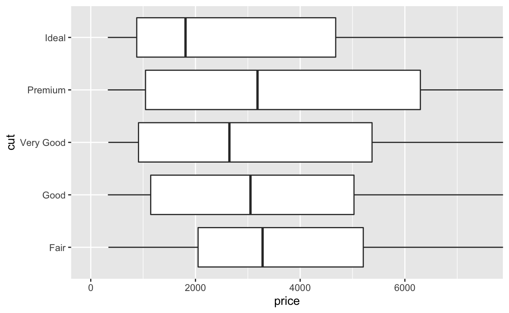
coord_cartesian()
Mais que se passe-t-il si votre graphique n’appelle pas de fonction de coordonnées ? Et bien votre graphique utilise des coordonnées cartésiennes (par défaut). Vous pouvez ajuster les limites de votre graphique sans changer le système de coordonnées par défaut en ajoutant la fonction coord_cartesian() à votre graphique.
Essayez ci-dessous. Utilisez coord_cartesian() pour zoomer p sur la région où le prix se situe entre 0 et 7500.
p +
coord_cartesian(ylim = c(0, 7500))"Bon travail ! Maintenant, il est beaucoup plus facile de voir les différences de médianes."p
Remarquez que notre code a jusqu’à présent utilisé p pour créer un graphique, mais il n’a pas changé le graphique qui est enregistré à l’intérieur de p. Vous pouvez exécuter p seul pour obtenir le graphique non zoomé.
p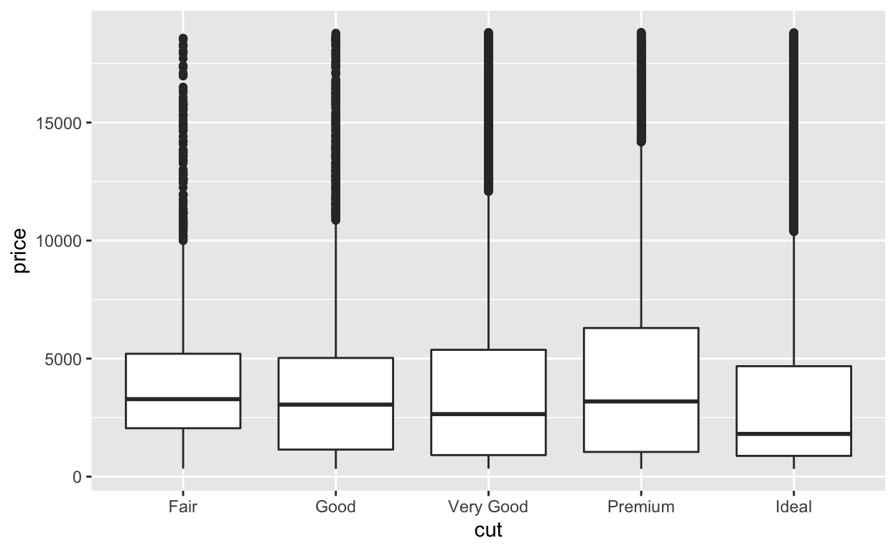
Mise à jour de p
Si nous souhaitons conserver le zoom, alors il faut volontairement écraser la version du graphique stockée dans p avec la nouvelle version :
p <- p +
coord_cartesian(ylim = c(0, 7500))
p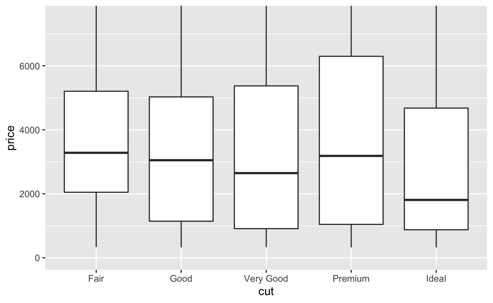
Etiquettes
labs()
La relation dans notre graphique est maintenant plus facile à voir, mais cela ne signifie pas que tous ceux qui verront notre graphique la repéreront. Nous pouvons attirer leur attention sur la relation avec une étiquette, comme un titre ou une légende.
Pour ce faire, nous utiliserons la fonction labs(). Vous pouvez considérer la fonction labs() comme une fonction générique permettant d’ajouter des étiquettes à un graphique {ggplot2}.
Titres
Donnez à labs() un argument title pour ajouter un titre au graphique :
p +
labs(title = "Le titre apparaît ici")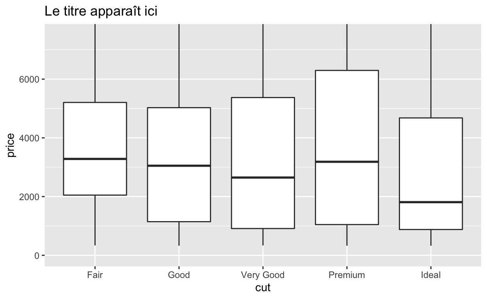
Sous-titres
Donnez à labs() un argument subtitle pour ajouter un sous-titre. Si vous utilisez plusieurs arguments, n’oubliez pas de les séparer par une virgule.
p + labs(title = "Le titre apparaît ici",
subtitle = "Le sous-titre apparaît ici, légèrement plus petit")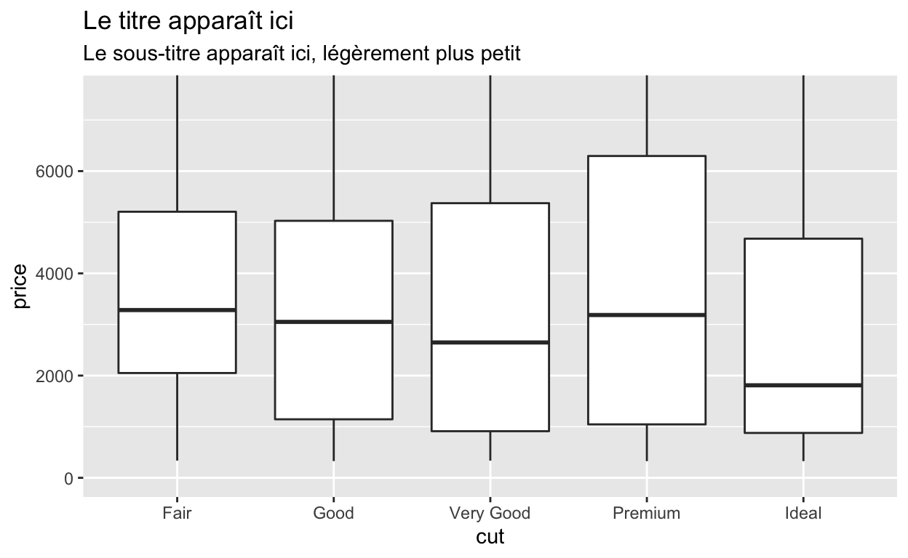
Captions
Donnez à labs() un argument caption pour insérer une note de bas de page. Cet élément peut être utilisé pour citer des sources par exemple.
p + labs(title = "Le titre apparaît ici",
subtitle = "Le sous-titre apparaît ici, légèrement plus petit",
caption = "La note de bas de page apparaît en bas.")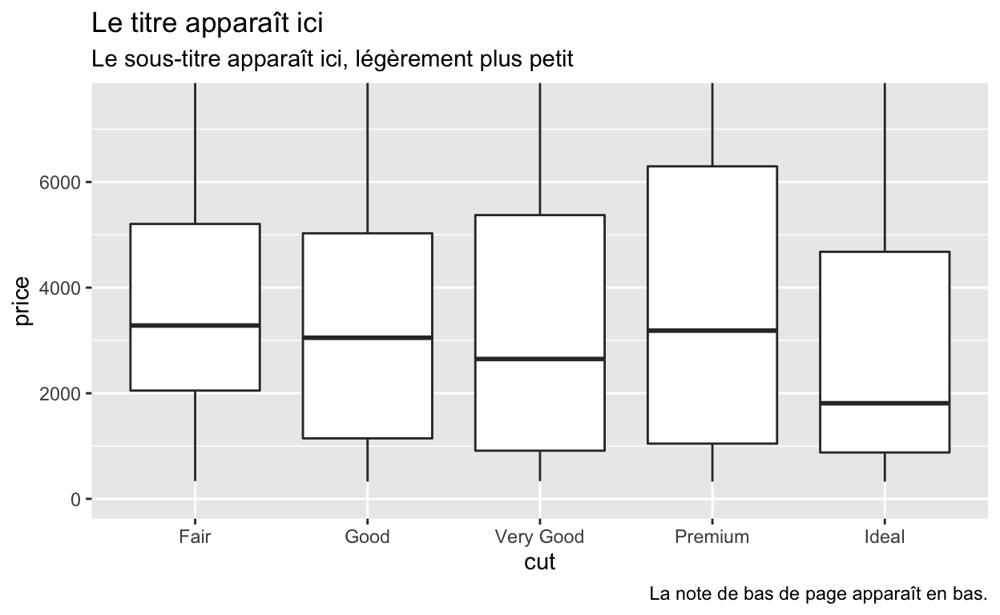
Exercice 2 - Étiquettes
Tracez p avec un ensemble d’étiquettes informatives. Pour des raisons d’apprentissage, veillez à utiliser un titre, un sous-titre et une note de bas de page.
p <- ggplot(diamonds) +
aes(x = cut, y = price) +
geom_boxplot() +
coord_cartesian(ylim = c(0, 7500))p + labs(title = "Prix des diamants par coupe",
subtitle = "Les diamants de coupe 'fair' ont le plus prix médian le plus important. Pourquoi ?",
caption = "Données collectées par Hadley Wickham")"Bon travail ! Au fait, pourquoi les diamants de taille 'fair' sont-ils les plus chers ?"Exercice 3 - Taille du carat ?
La taille d’un diamant est peut-être liée à sa taille en carats. Si les diamants de taille ‘fair’ ont tendance à être plus gros, cela expliquerait leur prix plus élevé. Testons cela.
Créez un graphique qui montre la relation entre la taille en carats, le prix et la taille pour tous les diamants. Comment interprétez-vous les résultats ? Donnez à votre graphique un titre, un sous-titre et une note de bas de page qui expliquent le graphique et transmettent vos conclusions.
Si vous cherchez un moyen de commencer, nous vous recommandons d’utiliser une ligne lisse avec une couleur pour chaque valeur de cut, peut-être superposée aux données brutes.
ggplot(data = diamonds) +
aes(x = carat, y = price) +
geom_smooth(aes(color = cut), se = FALSE) +
labs(title = "Taille de carat vs. Prix",
subtitle = "Les diamants de taille 'fair' ont tendance à être gros, mais ils atteignent les prix les plus bas pour la plupart des tailles de carats.",
caption = "Données collectées par Hadley Wickham")"Bon travail ! Le graphique corrobore notre hypothèse."p1
Contrairement à p, notre nouveau graphique utilise la couleur et a une note en bas. Enregistrons cette version pour l’utiliser plus tard lorsque nous apprendrons à personnaliser les couleurs et les notes.
p1 <- ggplot(data = diamonds) +
aes(x = carat, y = price) +
geom_smooth(aes(color = cut), se = FALSE) +
labs(title = "Taille de carat vs. Prix",
subtitle = "Les diamants de taille 'fair' ont tendance à être gros, mais ils atteignent les prix les plus bas pour la plupart des tailles de carats.",
caption = "Données collectées par Hadley Wickham")annotate()
annotate() fournit une dernière façon d’étiqueter votre graphique : elle ajoute un seul geom à votre tracé. Lorsque vous utilisez annotate(), vous devez d’abord choisir quel type de geom vous souhaitez ajouter parmi ceux que vous connaissez. Ensuite, vous devez fournir manuellement une valeur pour chaque paramètre esthétique requis par la fonction geom.
Ainsi, par exemple, nous pourrions utiliser annotate() pour ajouter du texte à notre graphique.
p1 +
annotate("text", x = 4, y = 7500, label = "Il n'y a pas de gros\ndiamants bon marché")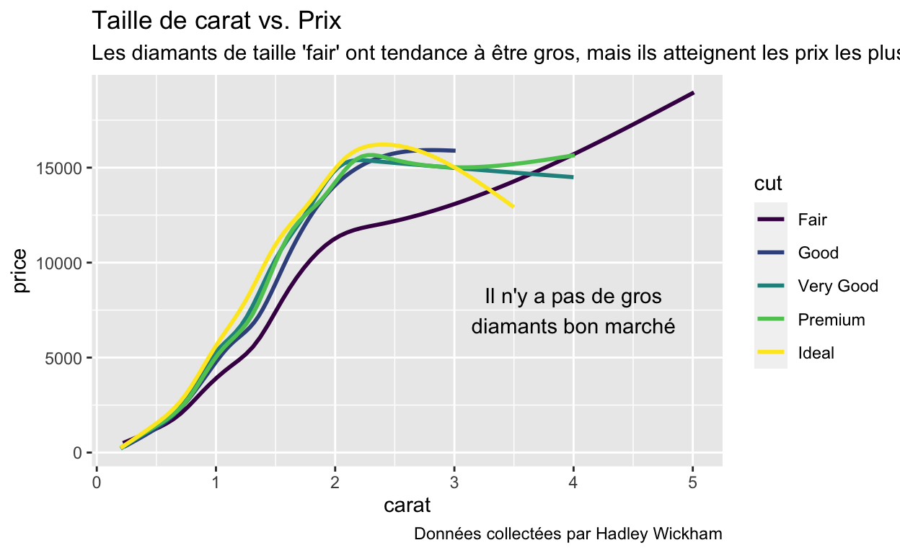
Notez que nous sélectionnons geom_text() grâce à l’argument "text". Il s’agit du suffixe du nom de la fonction, entre guillemets.
En pratique, annotate() prend beaucoup de temps à travailler, mais vous pouvez accomplir beaucoup de choses avec cette fonction si vous prenez le temps.
Thèmes
L’un des moyens les plus efficaces de contrôler l’apparence de votre graphique est d’utiliser un thème.
Qu’est-ce qu’un thème ?
Un thème décrit l’apparence des éléments qui ne sont pas liés aux données de votre graphique. Par exemple, ces deux graphiques présentent les mêmes données, mais elles utilisent deux thèmes très différents.
 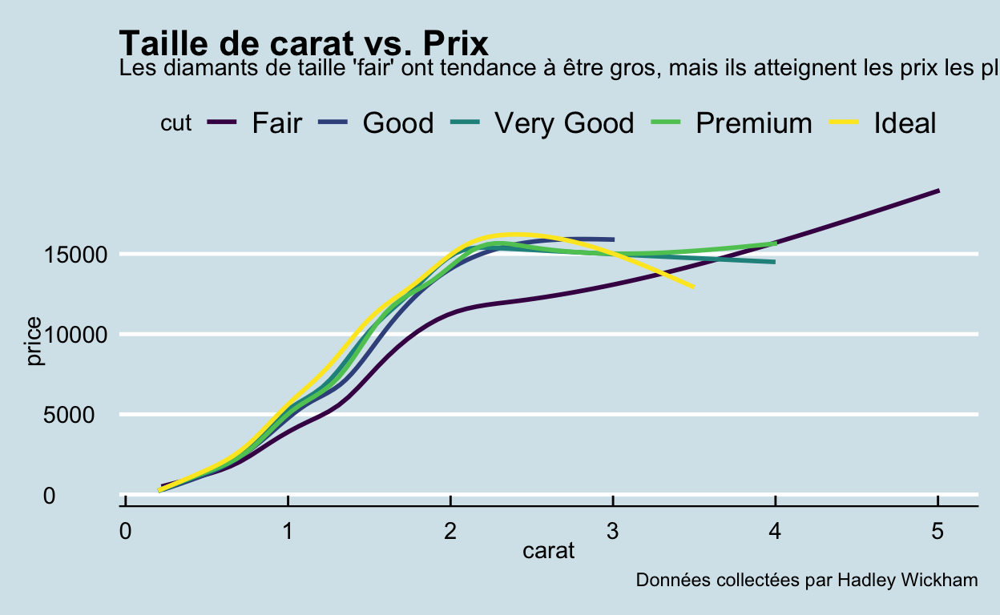
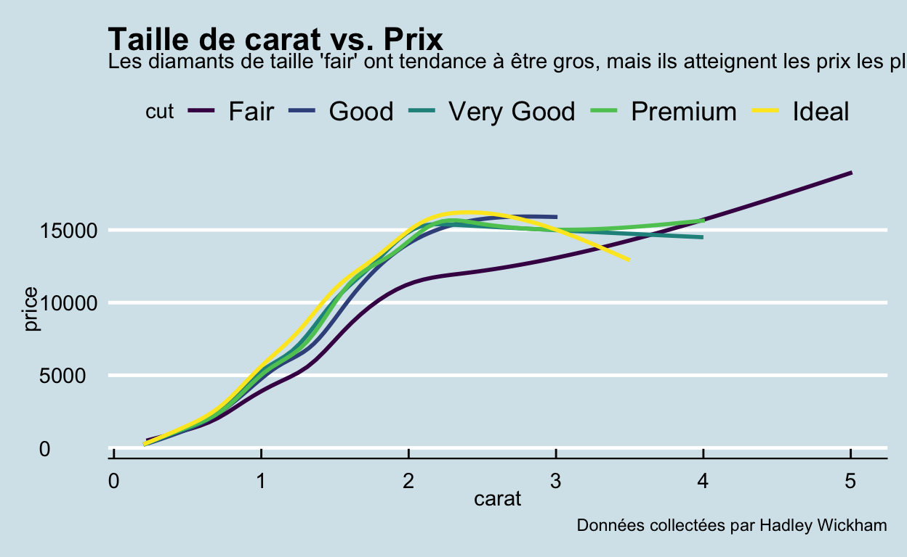
Fonctions theme()
Pour changer le thème de votre graphique, ajoutez une fonction theme_ à votre appel de graphique. Le package {ggplot2} fournit huit fonctions de thème parmi lesquelles vous pouvez choisir.
theme_bw()theme_classic()theme_dark()theme_gray()theme_light()theme_linedraw()theme_minimal()theme_void()
Utilisez le bloc ci-dessous pour tracer p1 avec chacun des thèmes. Quel thème préférez-vous ? Quel thème {ggplot2} s’applique par défaut ?
p1 +
theme_bw()p1 +
theme_classic()"Bien joué ! {ggplot2} utilise `theme_gray()` par défaut."{ggthemes}
Si vous souhaitez donner à votre graphique un aspect plus complet, le {package} ggthemes propose des thèmes supplémentaires qui imitent les styles de graphiques des progiciels et des publications les plus populaires. Ces thèmes comprennent :
theme_base()theme_calc()theme_economist()theme_economist_white()theme_excel()theme_few()theme_fivethirtyeight()theme_foundation()theme_gdocs()theme_hc()theme_igray()theme_map()theme_pander()theme_par()theme_solarized()theme_solarized_2()theme_solid()theme_stata()theme_tufte()theme_wsj()
Essayez de tracer p1 avec au moins deux ou trois des thèmes mentionnés ci-dessus.
p1p1 +
theme_wsj()"Bon travail ! Notez que chaque thème fournit ses propres tailles de police, ce qui signifie que vos légendes peuvent s'afficher en dehors de la page pour certains thèmes. En pratique, vous pouvez y remédier en redimensionnant votre fenêtre graphique."Mise à jour de p1
Si vous comparez les thèmes de ggtheme aux styles qu’ils imitent, vous remarquerez peut-être quelque chose : les couleurs utilisées pour tracer vos données n’ont pas changé. Il s’agit des couleurs notables de {ggplot2}. Dans la section suivante, nous allons voir comment personnaliser cette partie restante de votre graphique : les éléments de données.
Avant de continuer, nous vous suggérons de mettre à jour p1 pour utiliser theme_bw(). Cela rendra notre prochaine série de modifications plus facile à voir.
p1 <- p1 +
theme_bw()
p1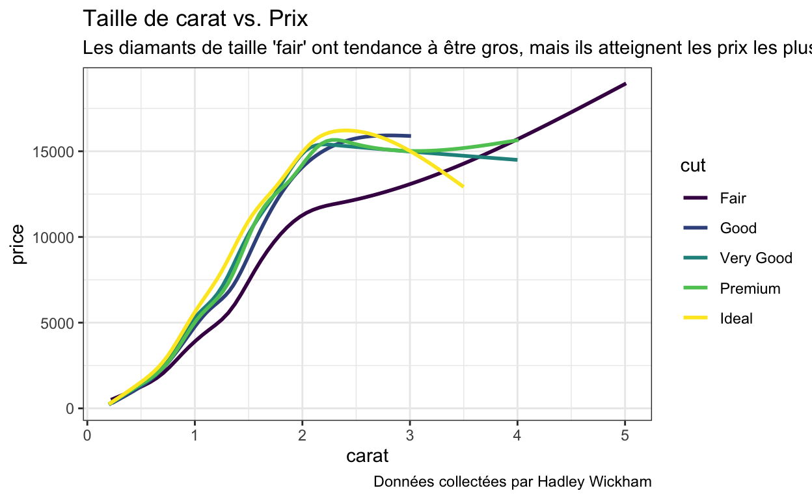
Echelles
Qu’est-ce qu’une échelle ?
Chaque fois que vous associez un paramètre esthétique à une variable, {ggplot2} s’appuie sur une échelle pour sélectionner les couleurs, tailles ou formes spécifiques à utiliser pour les valeurs de votre variable.
Une échelle est une fonction R qui fonctionne comme une fonction mathématique ; elle fait correspondre chaque valeur dans un espace de données à un niveau dans un espace esthétique. Mais il est peut-être plus facile de considérer une échelle comme une “palette”. Lorsque vous donnez une échelle de couleurs à votre graphique, vous lui donnez une palette de couleurs à utiliser.
Utilisation des échelles
{ggplot2} choisit un ensemble d’échelles chaque fois que vous faites un graphique. Vous pouvez modifier ou personnaliser ces échelles en ajoutant une fonction d’échelle à votre appel de graphique.
Par exemple, le code ci-dessous trace p1 en niveaux de gris au lieu des couleurs par défaut.
p1 + scale_color_grey()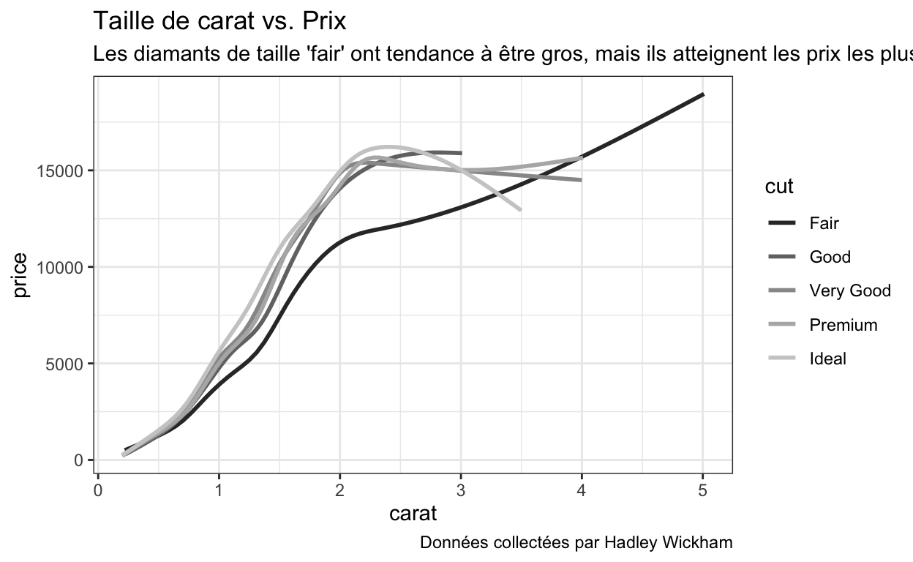
Un deuxième exemple
Vous pouvez ajouter des échelles pour chaque paramètre esthétique, y compris \(x\) et \(y\) (le code ci-dessous réalise une log-transformation des axes x et y).
p1 +
scale_x_log10() +
scale_y_log10()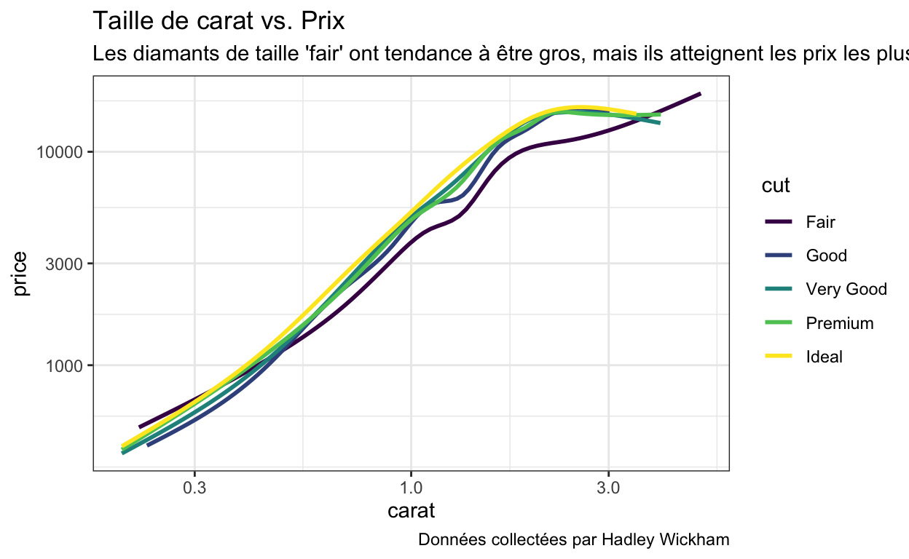
{ggplot2} fournit plus de 50 échelles à utiliser. Cela peut sembler énorme, mais les échelles sont organisées selon une convention de dénomination intuitive.
Convention de dénomination
Les fonctions scalede {ggplot2} suivent une convention de dénomination. Chaque nom de fonction contient les trois mêmes éléments dans l’ordre, séparés par des underscores :
Le préfixe
scalele nom d’un paramètre esthétique, que l’échelle ajuste (par exemple
color,fill,size)une étiquette unique pour l’échelle (par exemple
grey,brewer,manual)
scale_shape_manual() et scale_x_continuous() sont des exemples de ce schéma de dénomination.
Vous pouvez consulter la liste complète des noms d’échelle à l’adresse suivante : http://ggplot2.tidyverse.org/reference/. Dans ce module, nous allons nous concentrer sur les échelles qui fonctionnent avec le paramètre esthétique color.
Discrète vs. continue
Les échelles sont spécialisées soit dans les variables discrètes, soit dans les variables continues. En d’autres termes, vous utiliserez un ensemble d’échelles différent pour représenter une variable discrète, comme la clarté du diamant, que pour représenter une variable continue, comme le prix du diamant.
scale_color_brewer
Une des palettes de couleurs les plus utiles pour les variables discrètes est scale_color_brewer() (scale_fill_brewer() si vous travaillez avec le paramètre fill). Exécutez le code ci-dessous pour voir l’effet de l’échelle.
p1 <- ggplot(data = diamonds) +
aes(x = carat, y = price) +
geom_smooth(aes(color = cut), se = FALSE) +
labs(title = "Taille de carat vs. Prix",
subtitle = "Les diamants de taille 'fair' ont tendance à être gros, mais ils atteignent les prix les plus bas pour la plupart des tailles de carats.",
caption = "Données collectées par Hadley Wickham") +
theme_bw()p1 +
scale_color_brewer()"Bon travail ! scale_color_brewer() applique une palette de couleurs du package {RColorBrewer}, un package qui fournit des palettes de couleurs attrayantes." {RColorBrewer}
Le package {RColorBrewer} contient une variété de palettes développées par Cynthis Brewer. Chaque palette est conçue pour être agréable à regarder et pour bien différencier visuellement les valeurs représentées par la palette. Vous pouvez en apprendre davantage sur le projet colorbrewer sur colorbrewer2.org.
Au total, le package {RColorBrewer} contient 35 palettes. Vous pouvez voir chaque palette et son nom en exécutant RColorBrewer::display.brewer.all(). Essayez ci-dessous.
"Bon travail ! Notre graphique ci-dessus utilisait la palette Blues (par défaut)." RColorBrewer::display.brewer.all()Palettes brewer
Par défaut, scale_color_brewer() utilisera la palette “Blues” du package {RColorBrewer}. Pour utiliser une autre palette {RColorBrewer}, définissez l’argument de la palette de scale_color_brewer() sur un des noms de palette {RColorBrewer}, entouré de guillemets, par exemple :
p1 +
scale_color_brewer(palette = "Purples")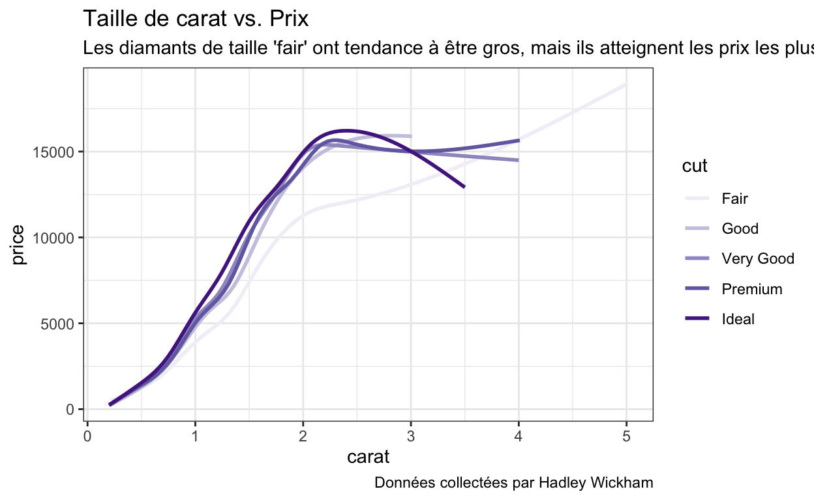
Exercice - scale_color_brewer()
Recréez le graphique ci-dessous, qui utilise une palette différente du package {RColorBrewer}.
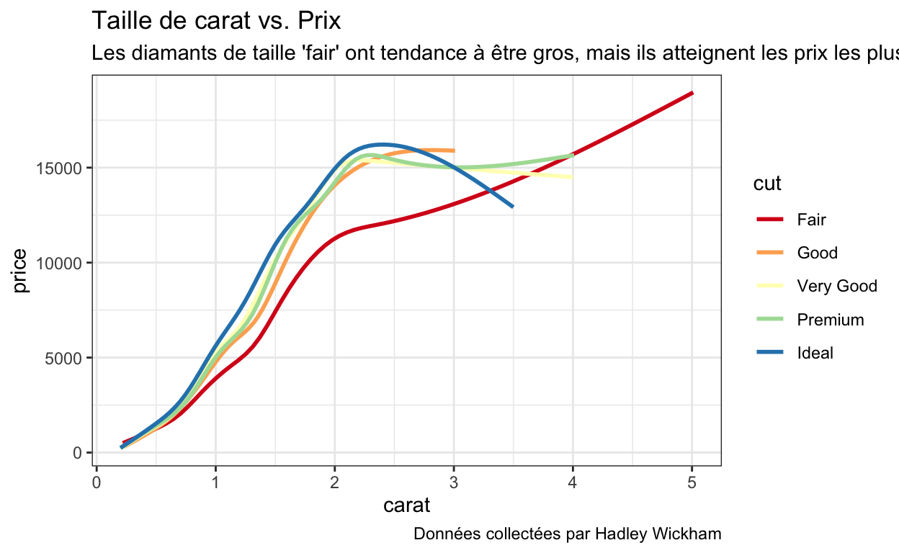
p1 +
scale_color_brewer(palette = "Spectral")"Bien joué ! scale_color_brewer() est l'une des fonctions les plus utiles pour personnaliser les couleurs dans {ggplot2}. En effet, elle fait pour vous le travail difficile de sélectionner une combinaison de couleurs agréable. Si vous souhaitez sélectionner vous-même des couleurs individuelles, essayez la fonction scale_color_manual()."Couleurs continues
scale_color_brewer() fonctionne avec des variables discrètes, mais que se passe-t-il si votre graphique fait correspondre la couleur à une variable continue ?
Puisque nous n’avons pas de graphique qui applique la couleur à une variable continue, créons-en un.
p_cont <- ggplot(data = mpg) +
aes(x = displ, y = hwy, color = hwy) +
geom_jitter() +
theme_bw()
p_cont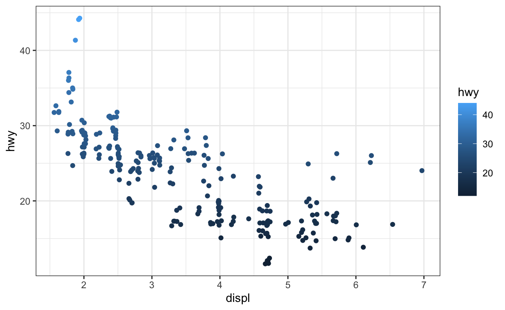
Discrète vs. continue en action
Si nous appliquons scale_color_brewer() à notre nouveau graphique, nous obtenons un message d’erreur qui confirme ce que vous savez : vous ne pouvez pas utiliser une échelle construite pour des variables discrètes pour une variable continue.
p_cont +
scale_color_brewer()## Error: Continuous value supplied to discrete scaledistiller
Heureusement, scale_color_brewer() est livré avec une fonction analogue dédiée aux fonctions continues : scale_color_distiller() (également scale_fill_distiller()).
Utilisez scale_color_distiller() comme vous le feriez avec scale_color_brewer(). scale_color_distiller() prendra n’importe quelle palette {RColorBrewer}, et interpolera entre les couleurs si nécessaire pour fournir une gamme complète et continue de couleurs.
Ainsi, par exemple, nous pourrions réutiliser la palette Spectral dans notre graphique continu :
p_cont +
scale_color_distiller(palette = "Spectral")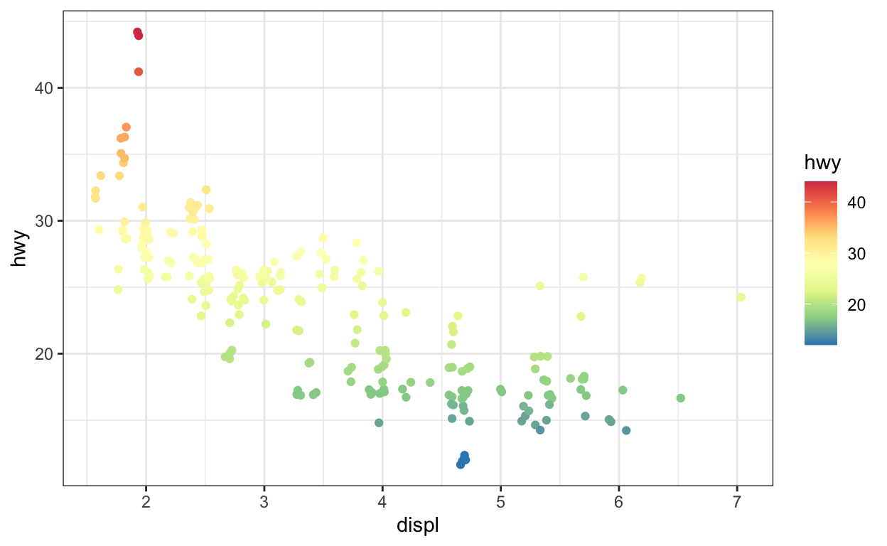
Exercice - scale_color_distiller()
Recréez le graphique ci-dessous, qui utilise une palette différente du package {RColorBrewer}.
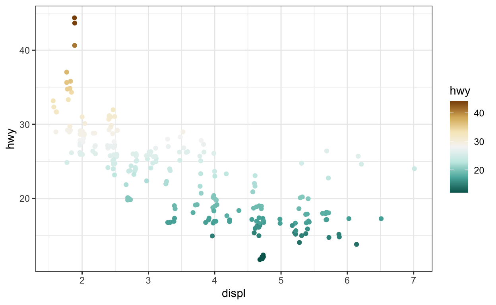
p_cont +
scale_color_distiller(palette = "BrBG")"Bon travail ! {ggplot2} fournit également les fonctions scale_color_gradient(), scale_color_gradient2(), et scale_color_gradientn(), que vous pouvez utiliser pour construire manuellement des gradients de 2, 3, et n couleurs."{viridis}
Le package {viridis} contient une collection de très belles palettes de couleurs pour les variables continues. Chaque palette est conçue pour montrer la gradation des valeurs continues d’une manière attrayante et uniforme sur le plan de la perception (aucune gamme de valeurs ne semble plus importante qu’une autre). En prime, les palettes sont à la fois facilement détectables par les daltoniens et adaptées à une impression en noir et blanc !
Pour ajouter une palette {viridis}, utilisez scale_color_viridis() ou scale_fill_viridis(), qui sont toutes deux fournies dans le package {viridis}.
p_cont +
scale_color_viridis()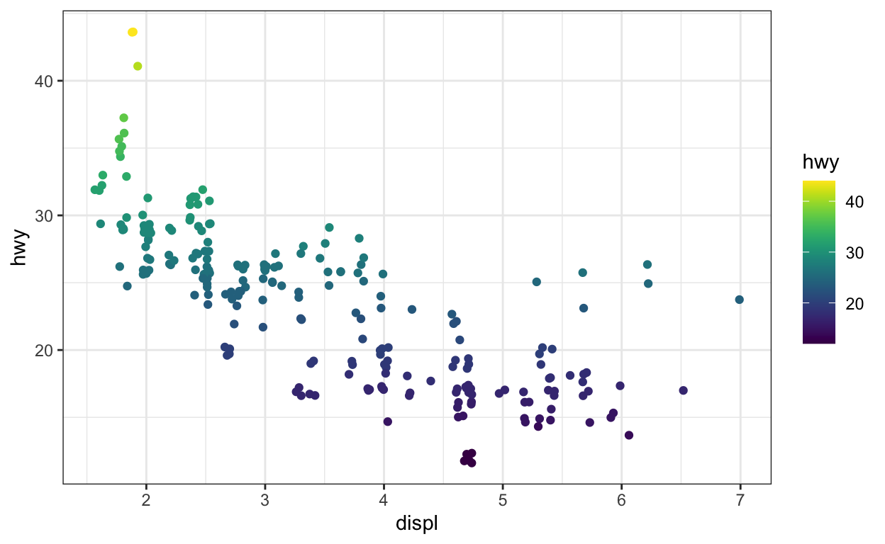
Options {viridis}
En tout, le package {viridis} comprend quatre palettes de couleurs, appelées magma, plasma, inferno et viridis.
Cependant, vous ne sélectionnez pas les palettes par leur nom. Pour sélectionner une palette de couleurs {viridis}, réglez l’argument option de scale_color_viridis() à l’une des valeurs suivantes : "A" (magma), "B" (plasma), "C" (inferno), ou "D" (viridis).
Essayez chaque option avec p_cont ci-dessous. Déterminez laquelle est la valeur par défaut.
p_cont +
scale_color_viridis(option = "D")"Bon travail ! L'option D est la valeur par défaut si vous ne sélectionnez pas une option."Legendes
Personnalisation d’une légende
Le dernier élément d’un graphique {ggplot2} à personnaliser est la légende. Pour une légende, vous pouvez personnaliser :
la position de la légende dans le graphique
le “type” de la légende, ou si une légende apparaît
le titre et les étiquettes dans la légende
La personnalisation des légendes est un peu plus difficile que la personnalisation d’autres parties du graphique, car les informations qui apparaissent dans une légende proviennent de plusieurs endroits différents.
Positions
Pour modifier la position d’une légende dans un graphique {ggplot2}, ajoutez l’une des options ci-dessous à votre appel de graphique :
+ theme(legend.position = "bottom")+ theme(legend.position = "top")+ theme(legend.position = "left")+ theme(legend.position = "right")(la valeur par défaut)
Essayez. Déplacez la légende dans p_cont vers le bas du graphique.
p_cont +
theme(legend.position = "bottom")"Bon travail ! Si vous déplacez la légende vers le haut ou le bas du graphique, {ggplot2} réorganisera l'orientation de la légende de la verticale à l'horizontale."theme() vs. thèmes
Les fonctions theme comme theme_grey() et theme_bw() ajustent également la position de la légende (parmi tous les autres détails qu’elles orchestrent). Donc si vous utilisez theme(legend.position = "bottom") dans vos graphiques, assurez-vous de l’ajouter après toute fonction theme_ que vous appelez, comme ceci :
ggplot(data = mpg) +
aes(x = displ, y = hwy, color = hwy) +
geom_jitter() +
theme_bw() +
theme(legend.position = "bottom")Si vous faites cela, {ggplot2} appliquera tous les réglages de theme_bw(), et écrasera ensuite le réglage de la position de la légende sur “bottom” (au lieu de l’inverse).
Types
Vous avez peut-être remarqué que les légendes de couleur (color) et de remplissage (fill) prennent deux formes. Si vous associez la couleur (ou le remplissage) à une variable discrète, la légende ressemblera à une légende standard. C’est le cas de la légende du bas ci-dessous.
Si vous associez la couleur (ou le remplissage) à une légende continue, votre légende ressemblera à une barre de couleurs. C’est le cas de la légende supérieure ci-dessous. La barre de couleurs permet d’indiquer la nature continue de la variable.
p_legend <- ggplot(data = mpg) +
aes(x = displ, y = hwy, color = class, fill = hwy) +
geom_jitter(shape = 21, size = 3, stroke = 1) +
theme_bw()
p_legendChangement de type
Vous pouvez utiliser la fonction guides() pour changer le type ou la présence de chaque légende dans le graphique. Pour utiliser la fonction guides(), tapez le nom du paramètre esthétique dont vous voulez modifier la légende puis mettez le à l’une des valeurs suivantes
"legend"- pour forcer une légende à apparaître comme une légende standard au lieu d’une barre de couleurs"colorbar"- pour forcer une légende à apparaître comme une barre de couleurs au lieu d’une légende standard. Remarque : cette option ne peut être utilisée que lorsque la légende peut être imprimée sous forme de barre de couleurs (auquel cas la valeur par défaut sera “colorbar”)."none"- pour supprimer entièrement la légende. C’est utile lorsque vous avez des aspects esthétiques redondants, mais cela peut rendre votre graphique indéchiffrable si vous ne l’utilisez pas à bon escient.
p_legend +
guides(fill = "legend", color = "none")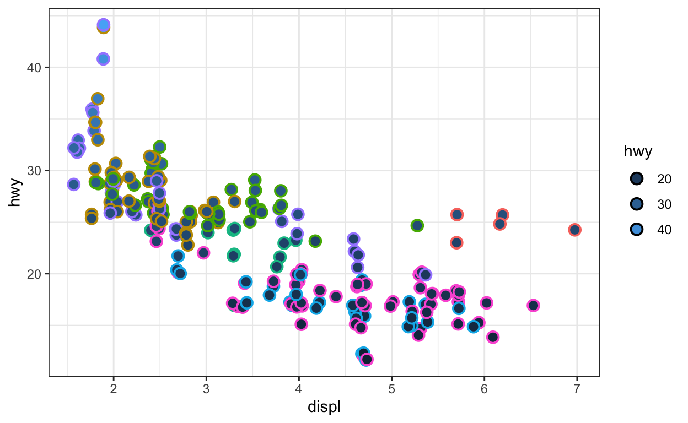
Exercice - guides()
Utilisez guides() pour supprimer toutes les légendes du graphique p_legend.
p_legend +
guides(fill = "none", color = "none")"Excellent travail, c'est exactement ça !"Étiquettes
Pour contrôler le titre et les étiquettes d’une légende, vous devez vous tourner vers les fonctions scale_. Chaque fonction scale_ prend un argument name et un argument labels, qu’elle utilisera pour construire la légenda. L’argument labels doit être un vecteur de chaînes de caractères qui comporte une chaîne de caractère pour chaque étiquette de la légende.
Ainsi, par exemple, vous pouvez ajuster la légende de p1 avec :
p1 +
scale_color_brewer(name = "Coupe", labels = c("Très mauvaise", "Mauvaise", "Mediocre", "Jolie", "Très jolie"))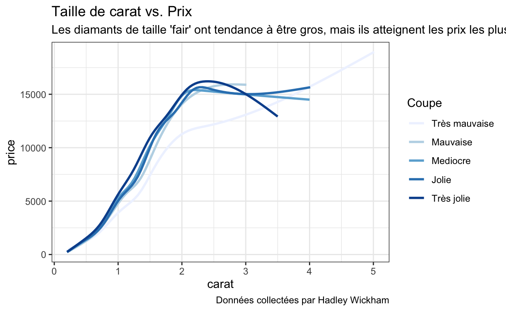
Et si ?
C’est pratique, mais cela soulève une question : que faire si vous n’avez pas invoqué une fonction scale_ pour spécifier des étiquettes ? Par exemple, le graphique ci-dessous repose sur les échelles par défaut :

Échelles par défaut
Dans ce cas, vous devez identifier l’échelle par défaut utilisée par le graphique, et ensuite ajouter manuellement cette échelle au graphique, en définissant les étiquettes comme vous le souhaitez.
Par exemple, notre graphique ci-dessus repose sur l’échelle de couleur par défaut pour une variable discrète, qui se trouve être scale_color_discrete(). Si vous savez cela, vous pouvez ré-étiqueter la légende de cette façon :
p1 +
scale_color_discrete(name = "Coupe", labels = c("Très mauvaise", "Mauvaise", "Mediocre", "Jolie", "Très jolie"))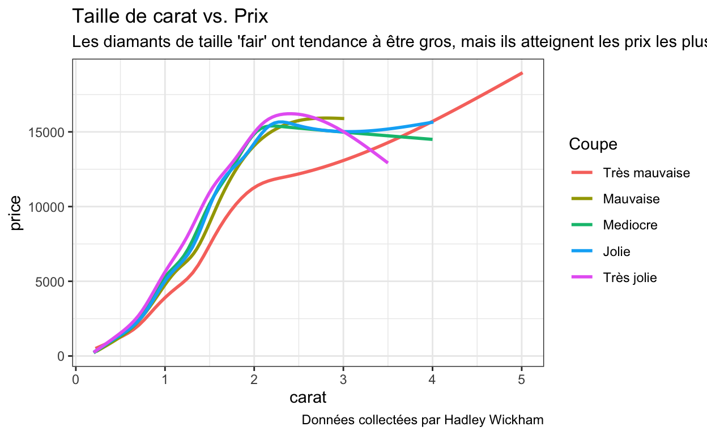
Comme vous pouvez le voir, il est pratique de savoir quelles échelles un graphique {ggplot2} utilisera par défaut. En voici une courte liste :
| paramètre esthétique | variable | défaut |
|---|---|---|
| x | continue | scale_x_continuous() |
| discrète | scale_x_discrete() | |
| y | continue | scale_y_continuous() |
| discrète | scale_y_discrete() | |
| color | continue | scale_color_continuous() |
| discrète | scale_color_discrete() | |
| fill | continue | scale_fill_continuous() |
| discrète | scale_fill_discrete() | |
| size | continue | scale_size() |
| shape | discrète | scale_shape() |
Exercice - Légendes
Utilisez la liste des échelles par défaut ci-dessus pour ré-étiqueter la légende dans p_cont. La légende doit porter le titre “Consommation sur autoroute (en miles par gallon)”. Placez également la légende en haut du graphique :
p_contp_cont +
scale_color_continuous(name = "Consommation sur autoroute (en miles par gallon)") +
theme(legend.position = "top")"Bien joué !"Étiquettes des axes
Dans {ggplot2}, les axes sont les “légendes” associées aux paramètres esthétiques \(x\) et \(y\). Par conséquent, vous pouvez contrôler les titres et les étiquettes des axes de la même manière que vous contrôlez les titres et les étiquettes des légendes :
p1 +
scale_x_continuous(name = "Taille du carat", labels = c("Zéro", "Un", "Deux", "Trois", "Quatre", "Cinq"))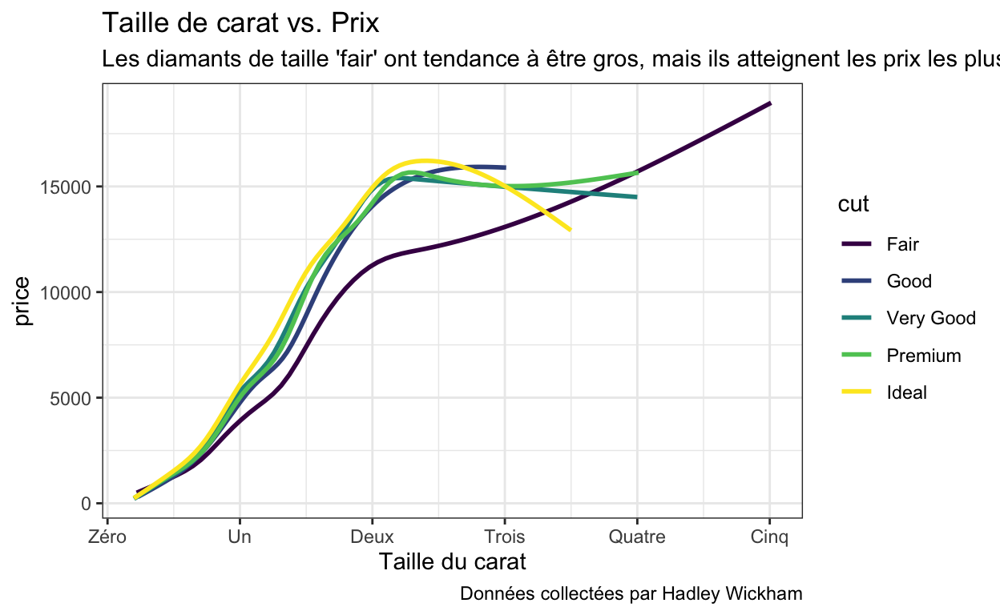
Quiz
Dans ce module, vous avez appris à personnaliser les graphiques que vous réalisez avec {ggplot2}. Vous avez appris à :
Zoomer sur des régions du graphique
Ajouter des titres, des sous-titres et des annotations
Ajouter des thèmes
Ajouter des échelles de couleurs
Ajuster les légendes
Pourconsolider vos compétences, combinez ce que vous avez appris pour recréer le graphique ci-dessous.
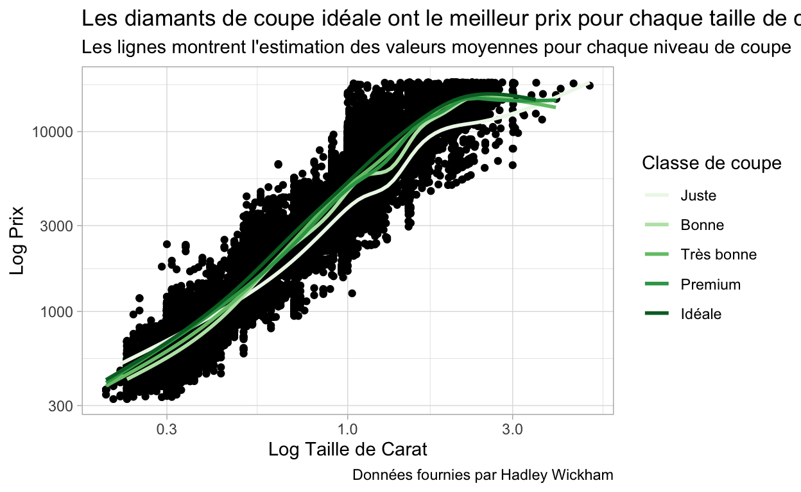
ggplot(diamonds) +
aes(x = carat, y = price) +
geom_point() +
geom_smooth(aes(color = cut), se = FALSE) +
labs(title = "Les diamants de coupe idéale ont le meilleur prix pour chaque taille de carat",
subtitle = "Les lignes montrent l'estimation des valeurs moyennes pour chaque niveau de coupe",
caption = "Données fournies par Hadley Wickham",
x = "Log Taille de Carat",
y = "Log Prix") +
scale_x_log10() +
scale_y_log10() +
scale_color_brewer(palette = "Greens", name = "Classe de coupe", labels = c("Juste", "Bonne", "Très bonne", "Premium", "Idéale")) +
theme_light()